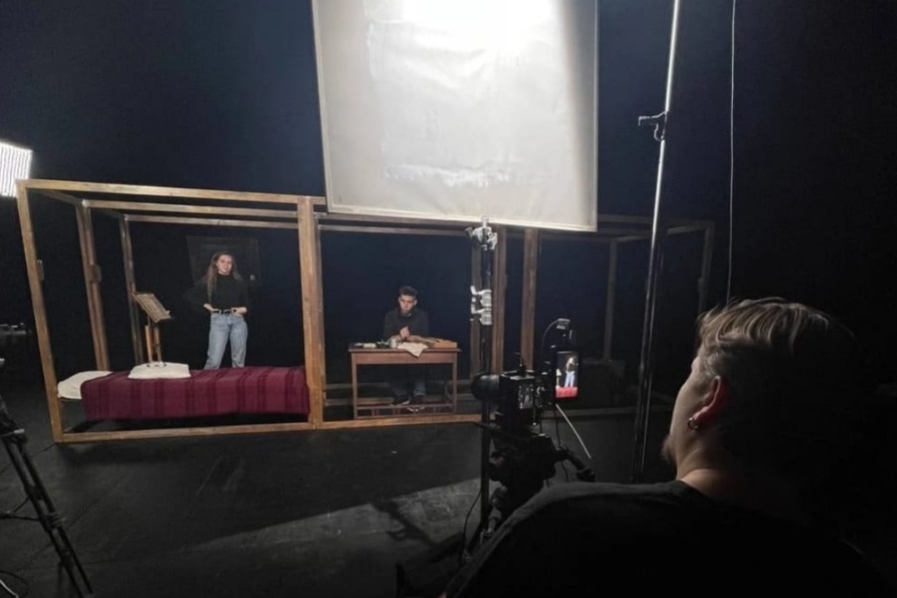
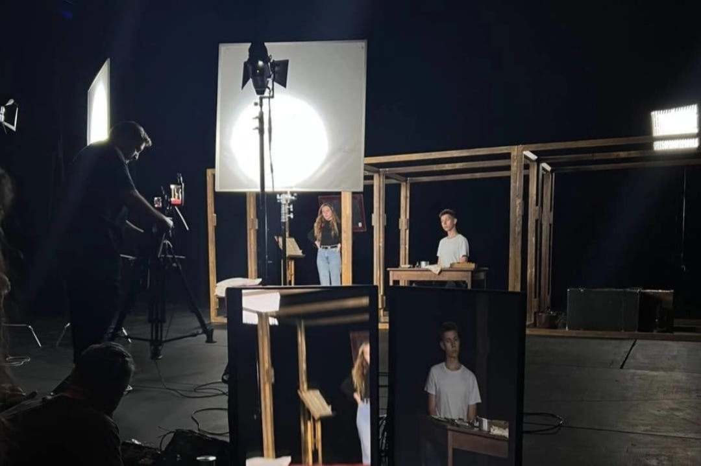

ПРОДАКШ РОЛИКОВ
По щелчку кинохлопушки, будто по взмаху волшебной палочки, сцена Театр Олега Табакова в этот день превратилась в съемочную площадку. Знаменитый спектакль «Матросская тишина», подобно птице, перепорхнул с подмостков Табакерки на экраны её выставки «Моя большая Земля» в Государственном центральном музее современной истории России.
 - В затемнённом извилистом коридоре экспозиции то справа, то слева, появлялись известные и любимые актёры. Сергей Угрюмов, Арина Долгих, Александр Фисенко и другие звёзды предстали перед зрителем в образах граждан молодой советской страны..
- Звуки мощных и уверенных голосов, мимика лиц и движения тел призывают вкалывать! За несколько дублей съёмок я ели сдерживался, чтобы не бросить свою хлопушку и схватиться за лопату. Ради чего? Ради воплощения мечты, ради созидания. Как же, ведь мы вместе строим социалистической рай для потомков! Жаль, я кажется опоздал…
- Как это было? Леонид Рудкевич выставлял по мне свет, который нещадно лупил по глазам – ничего не видно, словно в тумане. И вдруг, прямо из этой сияющий пелены, неожиданно материализовался Владимир Машков. Потрясающее впечатление от его появления. Работа с Машковым — серьёзный вызов. Он вышел, и его мощная харизма мгновенно заполнила каждый сантиметр окружающего пространства и охватила всех присутствующих. Этот человек настолько горит театром, что его идеи подхватывались на лету.
- Адреналин фонтанирует, как будто ты сам в кадре. Съемки давно прошли, а заряд держится до сих пор. Теперь вы понимаете, почему это событие которую неделю не выходит у меня из головы!